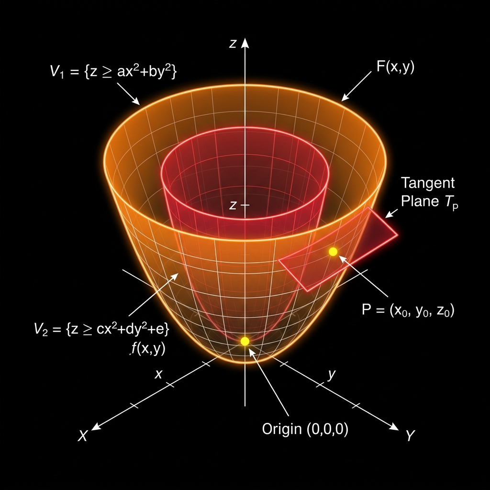

0. The question we're actually answering
You're standing at a point $x_k$. You know three things about the function $f$ there: its value, its slope (gradient), and its curvature (Hessian). You don't know what $f$ looks like anywhere else.
Question: using only that local information, what's the best guess for $f(x)$ at some nearby point $x$ — and can that guess tell you where to move next?
That's it. Everything below is just answering this one question, carefully.
1. The formula, stated first
This is the second-order Taylor expansion of $f$ around $x_k$. It has exactly three pieces, and each one has a specific job. Nothing about it is arbitrary — every symbol earns its place.
2. Term by term
Term 1 — $f(x_k)$
The starting height. Just the actual value of the function at the point you're standing on. No approximation here — this is exact.
Term 2 — $\nabla f(x_k)^T(x - x_k)$ (the flat-plane correction)
Two pieces multiplied together:
| Symbol | Meaning |
|---|---|
| $\nabla f(x_k)$ | the gradient at your current point — the direction of steepest increase, and how steep it is |
| $(x - x_k)$ | the displacement vector — the direction and distance you're moving, from $x_k$ toward $x$ |
Multiplying them answers: "if I move this far, in this direction, and the slope stayed exactly the same the whole way, how much would $f$ change?"
That's a linear guess — it's the equation of a flat plane sitting tangent to $f$ at $x_k$. No bending allowed yet.
Term 3 — $\frac{1}{2}(x - x_k)^T \nabla^2 f(x_k)(x - x_k)$ (the curvature correction)
This is where it gets interesting, so break it all the way down:
| Symbol | Meaning |
|---|---|
| $\frac{1}{2}$ | a constant scaling factor, falling straight out of the Taylor series derivation (each term is divided by a factorial — here $2! = 2$) |
| $x$ | the new point you're evaluating the approximation at |
| $x_k$ | your current, fixed, known point — "home base" |
| $(x - x_k)$ | the same displacement vector as before — direction and distance of the move |
| $(x - x_k)^T$ | the same vector, transposed into a row vector — pure bookkeeping, needed for the matrix multiplication to produce a single number |
| $\nabla^2 f(x_k)$ | the Hessian, evaluated at $x_k$ — just another way of writing $H$. A square matrix of all second-order partial derivatives |
Why the vector shows up twice. This is exactly the $d^T H d$ structure — the general formula for "how much does the function curve in direction $d$?" Here $d = (x - x_k)$, so:
The term is asking: "using the curvature information in $H$, how much does $f$ actually bend as I move this specific direction and distance away from $x_k$?"
Why the multiplication order matters. Matrix multiplication needs matching dimensions. A row vector ($1 \times n$) times a matrix ($n \times n$) times a column vector ($n \times 1$) collapses to a single number ($1 \times 1$) — which makes sense, since "curvature along one direction" should be one number, not a vector. That's why the first copy of $(x - x_k)$ needs the transpose and the second doesn't.
In plain English: "Take the direction and distance I'm moving away from $x_k$, and using the Hessian's curvature information at $x_k$, work out how much $f$'s height changes due to curvature alone over that specific move — then scale by one-half."
3. Putting all three terms together
$f(x)$ is: my starting height at $x_k$, plus how much height changes if I move a distance $(x - x_k)$ assuming the slope stays constant the whole way (the gradient term), plus a correction for the fact that the slope doesn't actually stay constant — it bends — and the amount of bending depends on the curvature specifically along the direction I'm moving (the Hessian term).
Picture standing at $x_k$ on the real, possibly complicated landscape. This formula builds a fake, simplified landscape — literally a paraboloid, a bowl shape — that:
- matches the real function's height exactly at $x_k$ (term 1)
- matches the real function's slope exactly at $x_k$ (term 2)
- matches the real function's curvature exactly at $x_k$ (term 3)

Figure 1: Visualizing quadratic approximation. The outer orange bowl represents the local Taylor approximation built at the point, while the nested red bowl represents the actual function curve we are approximating.
Away from $x_k$, the fake bowl only approximately resembles the real function, and it gets worse the farther you wander — it's ignoring every higher-order twist and bend beyond simple curvature. But right at $x_k$, and in a neighborhood around it, it's the best quadratic stand-in for $f$ you can build from the information you have.
Why this beats gradient descent: gradient descent only ever uses term 2 — it assumes the slope is roughly constant nearby, which is often wrong. This formula uses terms 2 and 3 together, giving a genuinely better local picture of $f$, not just a straight-line guess.
4. From "what f looks like" to "where to go"
Having a formula for $f(x)$ isn't the destination — it's a tool. The next question is: where is this fake bowl's bottom?
Since it's just a simple quadratic, calculus answers this exactly: take its gradient, set that gradient to zero, and solve. A minimum (or max, or saddle) always sits where the gradient vanishes.
Differentiate the approximation with respect to x:
- $f(x_k)$ is a constant (doesn't depend on $x$) → disappears entirely
- the gradient term differentiates down to just $\nabla f(x_k)$
- the Hessian term differentiates down to $\nabla^2 f(x_k)(x - x_k)$ (standard rule for differentiating a quadratic form)
Result:
Set it to zero, since that's what defines the bottom of the bowl:
Solve for $(x - x_k)$ — this is exactly the step you should take:
And there it is — the Newton's method update, derived, not assumed:
You built a fake bowl, found its exact bottom with plain calculus, and that bottom is the next point Newton's method moves to.
5. The four steps, in the correct order
It's tempting to describe this as "check the Hessian, and if it looks like a minimum, go there." That's backwards. The actual order is:
- Build the approximation. At your current point, construct the bowl above — using the current value, gradient, and Hessian.
- Find where that guess's slope is zero. Differentiate the approximation (not the real $f$), set it to zero, solve. Easy, because it's just a quadratic.
- Move there. This new $x$ is the Newton's method step. You move to it — unconditionally, no questions asked yet.
- Check what you landed on. Now, at the new point, compute the real Hessian fresh and check its eigenvalues:
- all positive → genuine local minimum
- all negative → local maximum
- mixed signs → saddle point
The key correction: Newton's method does not check first and move only if the destination looks promising. It moves first, unconditionally — the derivation in Section 4 never once referenced the sign of curvature, only where the slope of the approximation is zero. Only afterward do you find out what kind of point you actually reached. It's "go, then check," never "check, then go."
The gradient hitting (near) zero is your stopping signal — it tells you you've converged to some critical point. The eigenvalue check is a separate, necessary step after that, telling you which kind of critical point it was.
6. One-line summary
Build the best possible quadratic guess of $f$ at your current point → find that guess's exact minimum with calculus → move there → only then check, via the Hessian's eigenvalues, whether you landed on a minimum, a maximum, or a saddle.
References & Further Reading
For an excellent visual walkthrough and deeper intuition of the mathematics behind Newton's Method and second-order optimization, refer to this video lecture: